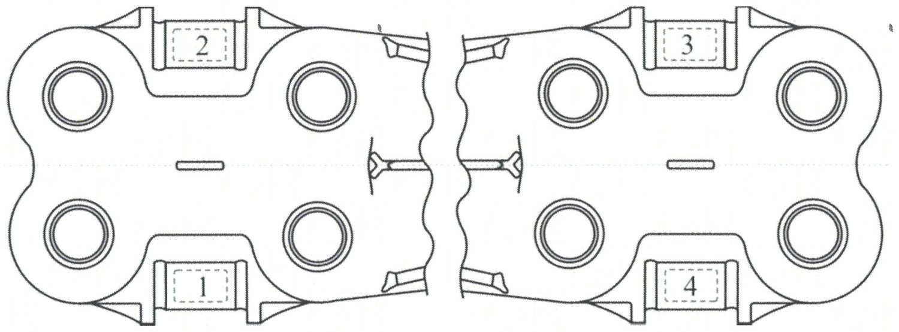
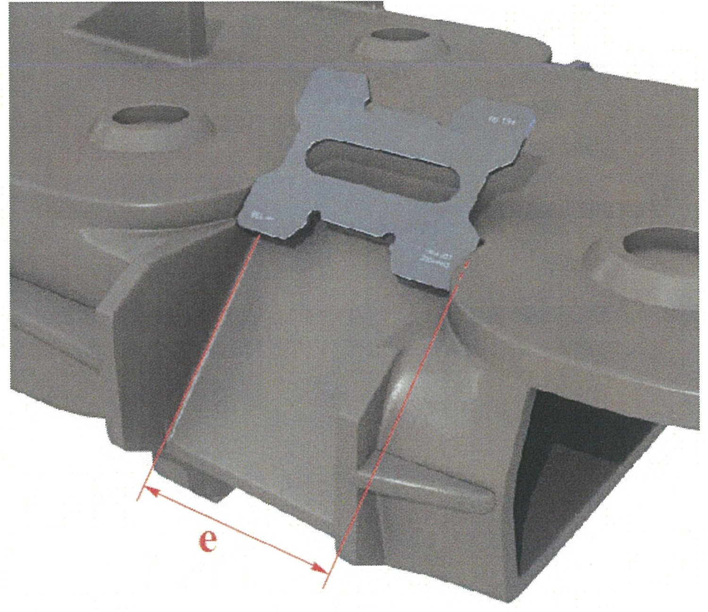
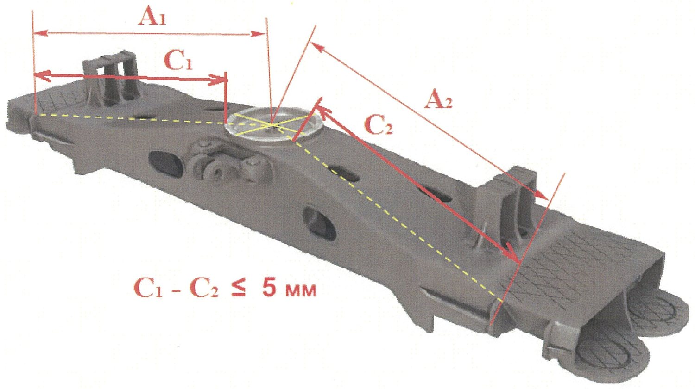
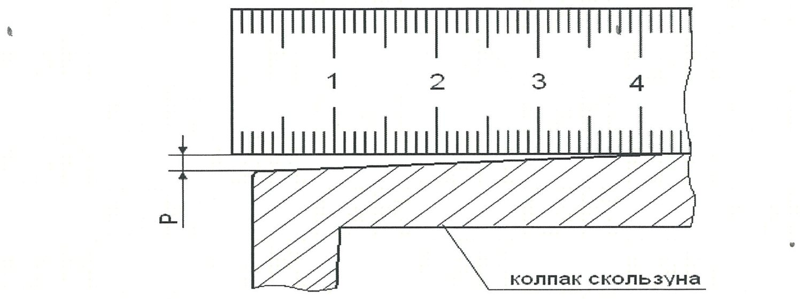

Nadressor balkasi: qalinlik, burtlar, skolzun va qattiqlik
5.1.3–5.1.7 bandlari: ultratovush qalinlik nazorati, «e» masofasi, burtlar nosimmetrikligi, skolzun qalpog'i va naplavka qattiqligi.
5.1.3 — Qolgan qalinlikni ultratovush bilan o'lchash
Qiya yuza yeyilganda devor ingichkalashadi. Uni buzmasdan o'lchashning yagona yo'li — ultratovush. Datchik metallga impuls yuboradi, impuls qarama-qarshi devordan qaytadi, asbob esa borish-qaytish vaqtidan qalinlikni hisoblaydi.

- O'lchash zonalarini tozalang va kontakt suyuqligining ingichka qatlamini suring.
- ПЭП ni 1-zonaning ixtiyoriy nuqtasiga shunday o'rnatingki, exo-signal shovqin fonida ishonchli ajralsin.
- Kuchaytirishni exo-signal amplitudasi strob darajasidan 1–2 katak yuqori bo'ladigan qilib sozlang.
- Barqaror natija olingach h ni yozing.
- Agar 1-zonada h_min dan kichik chiqsa — qo'shni ikkita nuqtada qo'shimcha o'lchang va uchtasining o'rta arifmetigini oling.
- 2, 3 va 4-zonalarda takrorlang.
5.1.4 — Cheklovchi burtlar orasidagi «e» masofasi
Friksion pona prizma bo'ylab yon tomonga siljib ketmasligi uchun ikki tomondan cheklovchi burtlar bilan ushlab turiladi. Burtlar yeyilsa, pona bo'sh qoladi va notekis ishlaydi.

Nazorat shablon Т914.007 bilan gorizontal tekislikda, burtlarning butun yuzasi bo'ylab o'tkaziladi — faqat yuqori qismida emas.
| Ta'mir turi | «e» me'yori |
|---|---|
| Kapital ta'mir | 134 (+4) mm |
| Depo ta'miri | 144,0 mm dan ko'p emas |
5.1.5 — Burtlar nosimmetrikligi |A₁ − A₂|
Prizmalarning yo'naltiruvchi burtlari podpyatnik o'qiga nisbatan simmetrik bo'lishi kerak. Nosimmetriklik bo'lsa, ikkita pona turli kuch bilan ishlaydi va aravacha ko'ndalang qiyshayadi.

- Moslama Т1354.000 ni balkaning yuqori yuzasiga prizma zonasida o'rnating va upor qovurg'alariga qotiring.
- 1000 mm li chizg'ich bilan moslamaning o'lchov yuzasidan podpyatnikning upor yuzasigacha masofani o'lchang — «C₁».
- Ikkinchi tomonda takrorlang — «C₂».
- |C₁ − C₂| ni hisoblang.
5.1.6 — Skolzun qalpog'ining yeyilishi
Yon skolzunlar vagon kuzovining aylanishini cheklaydi. Qalpoqning yassi ishchi yuzasi notekis yeyilsa, kuzov noto'g'ri tayanadi.

- Chizg'ichni yon qirrasi bilan qalpoq ishchi yuzasining birinchi diagonaliga qo'ying.
- Shchuplar bilan chizg'ich va yuza orasidagi «Р» tirqishini o'lchang.
- Ikkinchi diagonal bo'yicha takrorlang.
- Eng katta tirqishni hisobga oling.
| Holat | Qaror |
|---|---|
| «Р» ≤ 2 mm, depo ta'miri | Qalpoq qoldiriladi |
| «Р» > 2 mm | Qalpoq yangisiga almashtiriladi |
| Kapital ta'mir | Har doim yangi qalpoq o'rnatiladi |
5.1.7 — Naplavka qattiqligi
Yeyilgan yuzalar naplavka bilan tiklanadi. Naplavka juda yumshoq bo'lsa tez yeyiladi, juda qattiq bo'lsa mo'rt bo'lib yorilib ketadi. Shuning uchun qattiqlik ikki tomondan chegaralangan.
Nazorat savollari
Avval o'zingiz javob bering, so'ngra tekshiring.
1. Nadressor balkasi qiya yuzasining qolgan qalinligi kamida qancha bo'lishi kerak?
2. 1-zonada o'lchangan qalinlik h_min dan kichik chiqdi. Nima qilinadi?
3. Depo ta'mirida burtlar orasidagi «e» masofasi qancha bo'lishi mumkin?
4. Skolzun qalpog'i necha diagonal bo'yicha tekshiriladi va me'yor qancha?
5. Yeyilishga chidamli naplavkaning qattiqligi qanday oraliqda bo'lishi kerak?
Manba: РД 32 ЦВ 050-2020 — ГОСТ 9246-2013 bo'yicha tip 2 yuk vagon aravachalarini ta'mirlashda uzel va detallar parametrlarini o'lchash metodikasi.
Andijon vagon deposi · telejka ta'mirlash sexi.